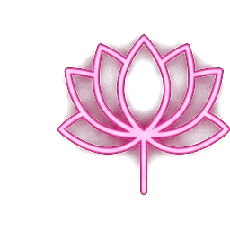
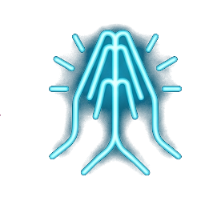
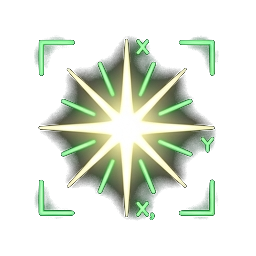
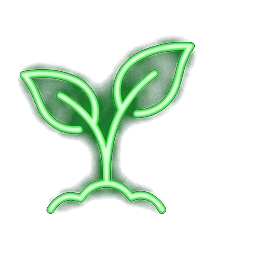

「叩首禮敬諸佛可以攝外放的妄心，達到定靜功夫。」




「腰帶動頭與手一起動，力量由腳來支撐，叩首非叩手。」
呼吸需緩慢至聽不見聲音。配合腹式深呼吸，吸氣時想像空氣從玄關吸入（默念真經首字），吐氣時想像體內濁氣從玄關吐出（默念後四字）。
腳膝蓋置於拜墊三分之一處，腳尖緊貼地面輕輕出力支撐，臀部微抬重心前傾。身體關節放鬆，感受腰部像彈簧般自動叩首的「氣機」現象。
感恩參閱 · 敬祝修辦順遂